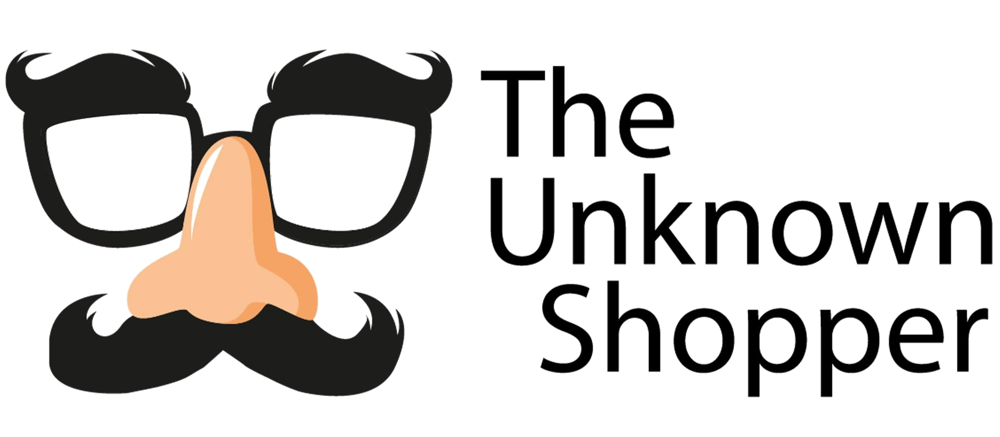
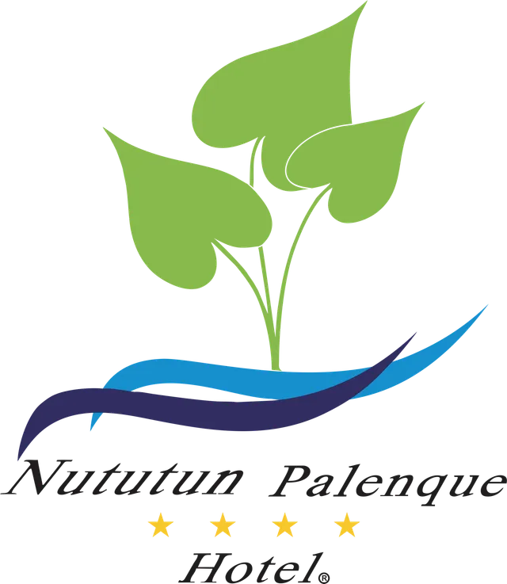

×
Por qué los viajeros eligen otros hoteles en Palenque — y qué hacer al respecto. Un menú modular de investigación: cada bloque puede contratarse por separado o como paquete integral.
Hotel Nututún Palenque cuenta con un activo que casi ningún competidor puede copiar: su propia poza natural sobre el río Chacamax, una reserva privada de selva, 72 habitaciones en 7 categorías y calificaciones sólidas en Booking (8.7) y Google (~4.5). Sin embargo, en Tripadvisor presenta la calificación más baja de su set competitivo (4.1) y un volumen de opiniones —proxy del share of voice— por debajo de sus rivales directos. La percepción no está a la altura del producto. Este estudio busca responder, con evidencia: ¿a dónde se van los huéspedes que Nututún no captura, y por qué?
Los competidores directos acumulan hasta 3× las opiniones de Nututún — más visibilidad en el ranking del destino, más prueba social, más reservas.
Fuente: Tripadvisor, oct. 2026 (cifras aproximadas; se validarán en la minería formal del M2).
El diagnóstico rápido ya muestra la primera grieta: el Wi-Fi arrastra la experiencia (6.5 vs. 8.7 general) y la relación calidad-precio es el segundo punto más débil.
Fuente: Booking.com, ficha pública de Hotel Nututun Palenque (408 evaluaciones).
Palenque compite en tres frentes: los resorts "selva" junto a la zona arqueológica, los hoteles de la Cañada y las opciones económicas con ratings sorprendentemente altos. Mismos datos para todos — la situación probable que el estudio convertirá en benchmarking verificado.
| Competidor | Segmento | Ubicación | Tripadvisor | Fortaleza percibida | ¿Compite por el mismo huésped? |
|---|---|---|---|---|---|
| Chan-Kah Resort Village | Resort selva | Carretera a las ruinas | 4.2★ · 1,436 | Mismo producto que Nututún — selva + cercanía a ruinas — a precio similar | Directa |
| La Aldea del Halach Huinic | Medio | La Cañada | 4.5★ · 1,262 | Zona hotelera peatonal, restaurantes a pie; rating y volumen altos | Directa |
| Hotel Maya Tulipanes | Medio | La Cañada | 4.4★ · 1,186 | Clásico consolidado; canal de agencias y grupos | Directa |
| Cabañas Kin Balam | Eco / económico | Camino a ruinas | 4.7★ · 868 | Rating sobresaliente a precio bajo; favorito de mochileros | Directa |
| Villa Mercedes | Medio-alto | Cerca de ruinas | 3.9★ · 848 | Marca regional conocida, jardines amplios; rating por debajo del set | Parcial |
| Casa Janaab | Hostal / budget | La Cañada | 4.8★ · 502 | Rating casi perfecto a ~$30/noche — otro viajero, otra decisión | Parcial |
| Quinta Chanabnal | Boutique lujo | Carretera ruinas | 4.8★ · 452 | Premium ~$220/noche: captura el ticket alto, no el volumen | Parcial |
| Ciudad Real Palenque | Medio | Ciudad / Pakal-Ná | 3.8★ · 416 | Cadena nacional; viajeros de negocio y tours | Indirecta |
| Hotel Nututún | Resort naturaleza | Km 3.5 carr. Ocosingo | 4.1★ · 525 | Poza natural propia, reserva de selva, río — activo irrepetible | — |
Criterio de la última columna: Directa = mismo segmento y rango de precio, pelea al mismo huésped; Parcial = comparte destino pero otro bolsillo o tipo de viajero; Indirecta = segmento ajeno. Por eso un 4.8★ boutique o un hostal perfectamente evaluado pesan menos que un 4.2★ que vende exactamente lo mismo que Nututún.
La lectura incómoda: Nututún compite contra hoteles mejor evaluados (4.2–4.8★) y más visibles. Su producto físico es superior a varios — la brecha está en la experiencia y la percepción, no en el activo. Eso es exactamente lo que hay que medir.
La debilidad histórica citada en guías (Fodor's): "lejos del pueblo pero tampoco más cerca de las ruinas" — una posición intermedia que hay que convertir en ventaja o compensar con transporte y paquetes.
Del desk research rápido emergen seis hipótesis. El estudio existe para confirmarlas, refutarlas o descubrir las que no vemos.
Cada módulo es independiente y entregable por separado. En la reunión, marquen los que apliquen: la barra inferior va sumando la inversión estimada. Los precios son de referencia y se cotizan fino al definir alcance.
(Versión impresa: la barra de selección interactiva solo funciona en pantalla.)
* Precios de referencia en MXN + IVA, sujetos a alcance, temporadas y número de evaluaciones. Los viáticos y hospedaje de shoppers en Palenque están incluidos.
Las encuestas de campo no se levantan en papel: se capturan en móvil, se sincronizan a la nube y Nututún las ve llegar en un tablero en vivo.
Encuestadores con app propia conectada a Firebase. Funciona sin señal (offline-first) y sincroniza al recuperar cobertura — clave en selva y carretera.
Cada entrevista queda validada con geolocalización, hora y foto opcional. Cero entrevistas "de escritorio": el tablero muestra el mapa de captura.
Panel web tipo panel.unknownshopper.com: Nututún ve avance de campo, resultados parciales y alertas desde el primer día de levantamiento.
Tres combinaciones de módulos pensadas para distintos presupuestos. Totalmente ajustables — el menú de la sección 04 manda.
Saber dónde estamos parados frente a la competencia.
Por qué eligen otros + cómo se vive Nututún por dentro.
Radiografía completa: nosotros, la competencia y el mercado.
Con base en el sureste de México (Villahermosa y cobertura regional), Palenque es territorio propio: campo más rápido y más barato que una consultora del centro.
Plataforma con credenciales por rol, evidencia verificable, alertas en tiempo real e históricos. Lo mismo que ya opera para retail, salud y automotriz.
Nunca publicamos clientes, logos ni casos. La operación y los resultados de Nututún permanecen confidenciales, siempre.
Contacto: The Unknown Shopper · unknownshoppers.com · WhatsApp +52 993 217 1855